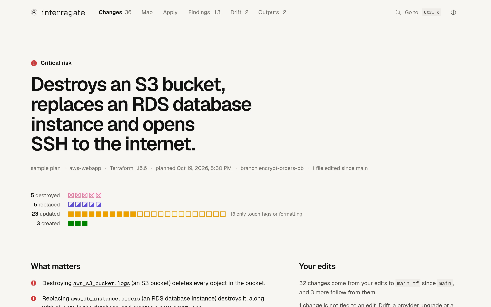
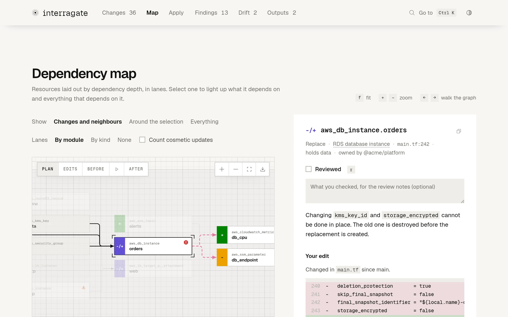
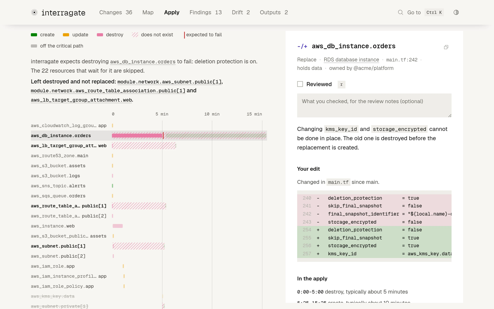
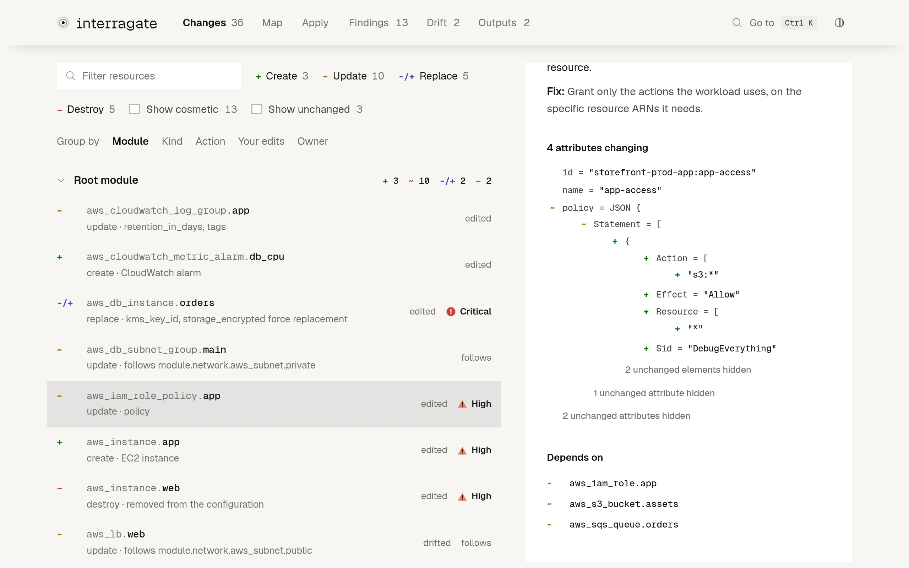

{{template "head" .}}
<body>
{{template "header" .}}
<main id="main">

{{/* Everything on this page about the sample, the words and the numbers in
     the drawings, is read from interragate demo aws and its plan by
     build.go, which fails rather than draw what the sample does not say. */}}

{{with .Sample.Figure}}
<section class="hero" aria-labelledby="name">
  <div class="wrap">
    <h1 id="name">interragate</h1>
    <p class="lead">Terraform and OpenTofu plans,<br> explained before you apply.</p>
    <div class="actions">
      <a class="button primary" href="demo/">Open the live report</a>
      <a class="button" href="#install">Install</a>
    </div>

    <figure class="verdict" data-verdict>
      <span class="beam" aria-hidden="true"></span>
      <div class="verdict-main">
        <p class="risk">{{sev .Risk}}<span>{{.RiskLabel}}</span></p>
        <p class="headline">{{range .Headline}}{{if .Address}}<span class="phrase" data-address="{{.Address}}">{{.Text}}</span>{{else}}{{.Text}}{{end}}{{end}}</p>
        <div class="inventory">
          {{- range $r, $_ := .Rows}}
          <p class="inv-label"><b data-count>{{.Count}}</b> {{.Label}}</p>
          <div class="units" style="--r:{{$r}}">
            {{- range $i, $u := .Units}}<a class="unit {{.Class}}" style="--i:{{$i}}" href="demo/#r={{.Address}}" tabindex="-1" aria-hidden="true" data-sym="{{.Sym}}" data-address="{{.Address}}" data-noun="{{.Noun}}" data-why="{{.Why}}"{{with .Finding}} data-finding="{{.}}" data-sev="{{$u.Sev}}"{{end}}></a>{{end}}
            {{- with .Note}}<span class="unit-note">{{.}}</span>{{end}}
          </div>
          {{- end}}
        </div>
      </div>
      {{with .Detail}}
      <div class="detail" data-detail>
        <p class="d-addr"><b class="sym {{.Action}}">{{.Sym}}</b> <code>{{.Address}}</code></p>
        <p class="d-noun">{{.Noun}}</p>
        <p class="d-why">{{doc .Why}}</p>
        {{with .Finding}}<p class="d-finding">{{sev $.Sample.Figure.Detail.Sev}}<span>{{.}}</span></p>{{end}}
      </div>
      {{end}}
      <figcaption class="verdict-foot">{{range .Meta}}<span>{{.}}</span>{{end}}<a href="demo/">Open the sample plan</a></figcaption>
      <template data-sev-icons><i data-sev="critical">{{sev "critical"}}</i><i data-sev="high">{{sev "high"}}</i><i data-sev="medium">{{sev "medium"}}</i><i data-sev="low">{{sev "low"}}</i></template>
    </figure>
  </div>
</section>
{{end}}

<section class="story" id="story" aria-labelledby="story-h">
  <div class="wrap">
    <div class="section-head">
      <h2 id="story-h">What each change will do.</h2>
      <p>Seven changes from that plan, played out.</p>
    </div>

    <div class="story-grid" data-story>

      <article class="chapter" style="--n:1" aria-labelledby="ch1">
        <p class="ch-no">01</p>
        <h3 id="ch1">Encrypting the database replaces it.</h3>
        <p class="ch-subject"><span class="sym replace">-/+</span> aws_db_instance.orders</p>
        {{with finding "stateful-replace:aws_db_instance.orders"}}
        <p class="ch-says">{{doc (first .Message)}}</p>
        <p class="ch-sev">{{sev .Severity}} {{sevLabel .Severity}}</p>
        {{end}}
      </article>
      <figure class="scene s-db b1 b2 b3 b4" style="--n:1" data-beats="4" aria-labelledby="ch1">
        <div class="art" aria-hidden="true">
          <div class="code-card">
            <p class="file">main.tf</p>
            <p class="ln del"><span class="no">243</span><span class="op">-</span><span class="src">{{edit "aws_db_instance.orders" 243}}</span></p>
            <p class="ln add"><span class="no">256</span><span class="op">+</span><span class="src">{{edit "aws_db_instance.orders" 256}}</span><span class="forces">forces replacement</span></p>
          </div>
          <span class="wire down"><i class="pulse"></i></span>
          <div class="db-pair">
            <div class="node was">
              <p class="node-head"><span class="tab">-/+</span><span class="id"><span class="type">aws_db_instance</span><span class="name">orders</span></span></p>
              <p class="cells">{{range seq 24}}<i style="--i:{{.}}"></i>{{end}}</p>
              <p class="node-foot">{{plan "aws_db_instance.orders" "before" "engine"}} {{plan "aws_db_instance.orders" "before" "engine_version"}} · {{plan "aws_db_instance.orders" "before" "allocated_storage"}} GB</p>
            </div>
            <span class="wire across"><i class="pulse"></i></span>
            <div class="node create new">
              <p class="node-head"><span class="tab">+</span><span class="id"><span class="type">aws_db_instance</span><span class="name">orders</span></span></p>
              <p class="cells empty">{{range seq 24}}<i></i>{{end}}</p>
              <p class="node-foot">new, empty</p>
            </div>
          </div>
          <div class="dependant">
            <span class="wire down short"></span>
            <div class="node update">
              <p class="node-head"><span class="tab">~</span><span class="id"><span class="type">aws_ssm_parameter</span><span class="name">db_endpoint</span></span></p>
            </div>
            <p class="flag waiting">points at no database for about {{gap "aws_db_instance.orders"}} minutes</p>
          </div>
        </div>
        <ol class="beats">
          <li>Your edit</li>
          <li>Can't be done in place</li>
          <li>Destroyed, with its data</li>
          <li>Created again, empty</li>
        </ol>
      </figure>

      <article class="chapter" style="--n:2" aria-labelledby="ch2">
        <p class="ch-no">02</p>
        <h3 id="ch2">Then the apply stops halfway.</h3>
        <p class="ch-subject"><span class="sym">$</span> terraform apply</p>
        {{with finding "protected-delete:aws_db_instance.orders"}}
        <p class="ch-says">{{doc .Message}}</p>
        <p class="ch-sev">{{sev .Severity}} {{sevLabel .Severity}}</p>
        {{end}}
      </article>
      {{with .Sample.Apply}}
      <figure class="scene s-apply b1 b2 b3 b4" style="--n:2;--stop:{{.StopAt}};--tick:{{(index .Ticks 1).At}}" data-beats="4" aria-labelledby="ch2">
        <div class="art" aria-hidden="true">
          <div class="gantt">
            <div class="axis">{{range .Ticks}}<span style="--at:{{.At}}">{{.Label}}</span>{{end}}</div>
            {{- range .Rows}}
            <div class="g-row{{if .Fails}} fails{{end}}{{if .Skipped}} skipped{{end}}{{if .Stranded}} stranded{{end}}">
              <p class="g-label"><span class="type">{{.Type}}</span><span class="name">{{.Name}}</span></p>
              <div class="track">
                {{- if .Stranded}}<span class="gone" style="--l:{{.Gap}}"><span>left destroyed</span></span>{{end}}
                {{- range .Bars}}<span class="bar {{.Op}} {{.State}}" style="--l:{{.Left}};--w:{{.Width}}"></span>{{end}}
                {{- if .Fails}}<span class="stop"><span>deletion protection is on</span></span>{{end}}
              </div>
            </div>
            {{- end}}
            <div class="playhead"></div>
          </div>
          <div class="tally">
            <p class="skip-n"><b>{{.Skipped}}</b> skipped</p>
            <p class="strand-n"><b>{{.Stranded}}</b> left destroyed</p>
          </div>
        </div>
        <ol class="beats">
          <li>The apply starts</li>
          <li>Deletion protection stops it</li>
          <li>{{.Skipped}} resources skipped</li>
          <li>{{.Stranded}} left destroyed</li>
        </ol>
      </figure>
      {{end}}

      <article class="chapter" style="--n:3" aria-labelledby="ch3">
        <p class="ch-no">03</p>
        <h3 id="ch3">Deleting a block empties a bucket.</h3>
        <p class="ch-subject"><span class="sym delete">-</span> aws_s3_bucket.logs</p>
        {{with finding "stateful-destroy:aws_s3_bucket.logs"}}
        <p class="ch-says">{{doc .Message}}</p>
        <p class="ch-sev">{{sev .Severity}} {{sevLabel .Severity}}</p>
        {{end}}
      </article>
      <figure class="scene s-bucket b1 b2 b3 b4" style="--n:3" data-beats="4" aria-labelledby="ch3">
        <div class="art" aria-hidden="true">
          <div class="code-card">
            <p class="file">main.tf</p>
            {{- range seq 4}}
            <p class="ln del{{if eq . 2}} hot{{end}}"><span class="no">{{add 272 .}}</span><span class="op">-</span><span class="src">{{edit "aws_s3_bucket.logs" (add 272 .)}}</span></p>
            {{- end}}
          </div>
          <span class="wire down"><i class="pulse"></i></span>
          <div class="node bucket">
            <p class="node-head"><span class="tab">-</span><span class="id"><span class="type">aws_s3_bucket</span><span class="name">logs</span></span></p>
            <p class="objects">{{range seq 48}}<i style="--i:{{.}}"></i>{{end}}<span class="emptied">every object deleted</span></p>
            <p class="node-foot">{{plan "aws_s3_bucket.logs" "before" "bucket"}}</p>
          </div>
        </div>
        <ol class="beats">
          <li>Block removed</li>
          <li>force_destroy is on</li>
          <li>Every object deleted</li>
          <li>Then the bucket</li>
        </ol>
      </figure>

      <article class="chapter" style="--n:4" aria-labelledby="ch4">
        <p class="ch-no">04</p>
        <h3 id="ch4">A temporary rule opens SSH to everyone.</h3>
        <p class="ch-subject"><span class="sym update">~</span> aws_security_group.app</p>
        {{with finding "public-ingress:aws_security_group.app"}}
        <p class="ch-says">{{doc .Message}}</p>
        <p class="ch-sev">{{sev .Severity}} {{sevLabel .Severity}}</p>
        {{end}}
      </article>
      <figure class="scene s-ssh b1 b2 b3" style="--n:4" data-beats="3" aria-labelledby="ch4">
        <div class="art" aria-hidden="true">
          <div class="world">
            <svg viewBox="0 0 48 48"><circle cx="24" cy="24" r="21"/><ellipse cx="24" cy="24" rx="9" ry="21"/><path d="M3 24h42M7 13h34M7 35h34"/></svg>
            <p><b>anywhere</b><span>0.0.0.0/0</span></p>
          </div>
          <span class="wire across open"><i class="packet"></i><i class="packet"></i><i class="packet"></i></span>
          <div class="node sg">
            <p class="node-head"><span class="tab">~</span><span class="id"><span class="type">aws_security_group</span><span class="name">app</span></span></p>
            <p class="rules-head">ingress</p>
            {{- range ingress "aws_security_group.app"}}
            <p class="sg-rule{{if .Added}} added{{end}}"><span class="port">{{.Port}}</span><span class="from">{{.From}}</span><span class="about">{{.About}}</span></p>
            {{- end}}
          </div>
          <span class="wire across open"><i class="packet"></i><i class="packet"></i><i class="packet"></i></span>
          <div class="node create host">
            <p class="node-head"><span class="tab">+</span><span class="id"><span class="type">aws_instance</span><span class="name">app</span></span></p>
            <p class="node-foot">SSH from anywhere</p>
          </div>
        </div>
        <ol class="beats">
          <li>A temporary rule</li>
          <li>Port 22, from anywhere</li>
          <li>Open to the internet</li>
        </ol>
      </figure>

      <article class="chapter" style="--n:5" aria-labelledby="ch5">
        <p class="ch-no">05</p>
        <h3 id="ch5">Removing a zone moves every subnet after it.</h3>
        <p class="ch-subject"><span class="sym replace">-/+</span> module.network.aws_subnet.private[1]</p>
        {{with finding "count-index-shift:module.network.aws_subnet.private[1]"}}
        <p class="ch-says">{{doc (first .Message)}}</p>
        <p class="ch-sev">{{sev .Severity}} {{sevLabel .Severity}}</p>
        {{end}}
      </article>
      <figure class="scene s-count b1 b2 b3 b4" style="--n:5" data-beats="4" aria-labelledby="ch5">
        <div class="art" aria-hidden="true">
          <div class="code-card azs">
            <p class="file">var.azs</p>
            <p class="list"><span class="brk">[</span>
              {{- range $i, $_ := seq 3}}{{$az := plan (printf "module.network.aws_subnet.private[%d]" $i) "before" "availability_zone"}}<span class="az az{{$i}}"><span class="q">"{{$az}}"{{if lt $i 2}},{{end}}</span><span class="ix"><span class="was">[{{$i}}]</span>{{if eq $i 2}}<span class="now">[1]</span>{{end}}</span></span>{{end -}}
            <span class="brk">]</span></p>
          </div>
          <div class="subnets">
            {{- range $i, $_ := seq 3}}{{$a := printf "module.network.aws_subnet.private[%d]" $i}}{{$c := change $a}}
            <div class="node subnet n{{$i}} {{$c.Action}}">
              <p class="node-head"><span class="tab">{{if eq $c.Action "replace"}}-/+{{else if eq $c.Action "delete"}}-{{else}}~{{end}}</span><span class="id"><span class="type">aws_subnet</span><span class="name">private[{{$i}}]</span></span></p>
              <p class="az-line"><span class="before">{{plan $a "before" "availability_zone"}}</span>{{if eq $c.Action "replace"}}<span class="after">{{plan $a "after" "availability_zone"}}</span>{{end}}</p>
              <p class="node-foot">{{plan $a "before" "cidr_block"}}</p>
            </div>
            {{- end}}
          </div>
          <div class="keyed">
            <p class="keyed-head">for_each = toset(var.azs)</p>
            <div class="keys">
              {{- range $i, $_ := seq 3}}{{$az := plan (printf "module.network.aws_subnet.private[%d]" $i) "before" "availability_zone"}}
              <span class="key{{if eq $i 1}} goes{{end}}">{{if eq $i 1}}<b>-</b>{{end}}["{{$az}}"]</span>
              {{- end}}
            </div>
          </div>
        </div>
        <ol class="beats">
          <li>One zone removed</li>
          <li>[2] slides into [1]</li>
          <li>[1] rebuilt, [2] destroyed</li>
          <li>Keyed by zone, one goes</li>
        </ol>
      </figure>

      <article class="chapter" style="--n:6" aria-labelledby="ch6">
        <p class="ch-no">06</p>
        <h3 id="ch6">A rename rebuilds the server.</h3>
        <p class="ch-subject"><span class="sym delete">-</span> aws_instance.web <span class="sym create">+</span> aws_instance.app</p>
        {{with finding "missing-moved-block:aws_instance.web"}}
        <p class="ch-says">{{doc .Message}}</p>
        <p class="ch-sev">{{sev .Severity}} {{sevLabel .Severity}}</p>
        {{end}}
      </article>
      <figure class="scene s-rename b1 b2 b3 b4" style="--n:6" data-beats="4" aria-labelledby="ch6">
        <div class="art" aria-hidden="true">
          <div class="code-card">
            <p class="file">main.tf</p>
            <p class="ln del"><span class="no">200</span><span class="op">-</span><span class="src">{{edit "aws_instance.web" 200}}</span></p>
            <p class="ln add"><span class="no">214</span><span class="op">+</span><span class="src">{{edit "aws_instance.web" 214}}</span></p>
          </div>
          <div class="pair">
            {{- range $i, $a := list "aws_instance.web" "aws_instance.app"}}{{$w := "after"}}{{if eq $i 0}}{{$w = "before"}}{{end}}
            <div class="node {{if eq $i 0}}web{{else}}app{{end}}">
              <p class="node-head"><span class="tab">{{if eq $i 0}}-{{else}}+{{end}}</span><span class="id"><span class="type">aws_instance</span><span class="name">{{if eq $i 0}}web{{else}}app{{end}}</span></span></p>
              <ul class="attrs">
                <li><span>ami</span>{{plan $a $w "ami"}}</li>
                <li><span>type</span>{{plan $a $w "instance_type"}}</li>
                <li><span>subnet</span>{{plan $a $w "subnet_id"}}</li>
                <li><span>profile</span>{{plan $a $w "iam_instance_profile"}}</li>
              </ul>
            </div>
            {{- if eq $i 0}}<span class="same">=</span>{{end}}
            {{- end}}
          </div>
          <div class="code-card moved">
            <p class="file">main.tf</p>
            {{- range (finding "missing-moved-block:aws_instance.web").Snippet | lines}}
            <p class="ln add"><span class="op">+</span><span class="src">{{.}}</span></p>
            {{- end}}
          </div>
        </div>
        <ol class="beats">
          <li>Renamed</li>
          <li>Destroyed and created</li>
          <li>With the same settings</li>
          <li>A moved block keeps it</li>
        </ol>
      </figure>

      <article class="chapter" style="--n:7" aria-labelledby="ch7">
        <p class="ch-no">07</p>
        <h3 id="ch7">A fix made by hand is undone.</h3>
        <p class="ch-subject"><span class="sym update">~</span> aws_security_group.alb</p>
        {{with finding "drift-revert:aws_security_group.alb"}}
        <p class="ch-says">{{doc .Message}}</p>
        <p class="ch-sev">{{sev .Severity}} {{sevLabel .Severity}}</p>
        {{end}}
      </article>
      <figure class="scene s-drift b1 b2 b3 b4" style="--n:7" data-beats="4" aria-labelledby="ch7">
        <div class="art" aria-hidden="true">
          <div class="node sg">
            <p class="node-head"><span class="tab">~</span><span class="id"><span class="type">aws_security_group</span><span class="name">alb</span></span></p>
            <p class="rules-head">ingress</p>
            {{- range ingress "aws_security_group.alb"}}
            <p class="sg-rule{{if .Removed}} drifted{{end}}"><span class="port">{{.Port}}</span><span class="from">{{.From}}</span><span class="about">{{.About}}</span>{{if .Removed}}<span class="badge">outside Terraform</span>{{end}}</p>
            {{- end}}
          </div>
          <div class="sources">
            <p class="source git"><span class="label">your branch</span><span>no edit to this group</span></p>
            <p class="source plan"><span class="label">this plan</span><span>puts it back as main.tf has it</span></p>
          </div>
          <p class="flag advice">{{(finding "drift-revert:aws_security_group.alb").Remediation}}</p>
        </div>
        <ol class="beats">
          <li>Added by hand</li>
          <li>No edit asked for this</li>
          <li>This plan removes it</li>
          <li>Keep it, if it was meant</li>
        </ol>
      </figure>

    </div>
  </div>
</section>

{{with .Sample.Branch}}
<section class="band wrap origins" id="branch" aria-labelledby="branch-h">
  <div class="section-head">
    <h2 id="branch-h">What your branch did, and what it didn't.</h2>
    <p>interragate compares the plan with git, so a change no edit explains stands out.</p>
  </div>
  <figure class="origin-figure" data-origins>
    {{- range .Groups}}
    <div class="origin {{.Origin}}">
      <p class="origin-label"><b data-count>{{len .Units}}</b> {{if eq .Origin "edit"}}from your edits to <code>{{index $.Sample.Branch.Files 0}}</code>{{else if eq .Origin "follows"}}follow from them{{else}}not tied to an edit{{end}}</p>
      <div class="units">{{range .Units}}<span class="unit {{.Class}}" style="--o:{{.Index}}" title="{{.Sym}} {{.Address}}"></span>{{end}}</div>
      {{- if eq .Origin "untied"}}
      <p class="origin-note">{{range .Units}}<code>{{.Address}}</code>{{end}}, the hand-made fix above</p>
      {{- end}}
    </div>
    {{- end}}
    <figcaption class="sr-only">{{len .Units}} changes: {{range $i, $g := .Groups}}{{if $i}}, {{end}}{{len .Units}} {{.Origin}}{{end}}.</figcaption>
  </figure>
</section>
{{end}}

{{with .Comment}}
<section class="band wrap review" id="ci" aria-labelledby="ci-h">
  <div class="review-side">
    <div class="section-head">
      <h2 id="ci-h">Put it in the review.</h2>
      <p>The same reading, as a comment on the pull request.</p>
    </div>
    <div class="ci-command">
      <pre class="code" data-copy="- uses: Jeecabs/interragate@main"><code>- uses: Jeecabs/interragate@main</code></pre>
      <a href="https://github.com/Jeecabs/interragate/blob/main/docs/ci.md">Set up the action</a>
    </div>
  </div>
  <figure class="pr">
    <div class="pr-comment">
      <p class="pr-head"><span class="avatar">{{template "mark"}}</span><b>github-actions</b><span class="bot">bot</span><span class="when">commented</span></p>
      <div class="pr-body">
        <h3>{{sev .Risk}}<span>{{.Title}}</span></h3>
        <p><strong>{{.Headline}}</strong></p>
        <p class="pr-counts">{{.Counts}}</p>
        <ul>{{range .Items}}<li>{{sev .Severity}}<span>{{.Text}}</span></li>{{end}}</ul>
      </div>
    </div>
    <figcaption>The start of <code>interragate demo aws -f markdown</code>.</figcaption>
  </figure>
</section>
{{end}}

<section class="band wrap" aria-labelledby="report-h">
  <div class="section-head">
    <h2 id="report-h">Follow the details.</h2>
    <p>One report. Every resource, dependency and diff.</p>
  </div>
  <div class="shots" data-tabs>
    <div class="tabs" role="tablist" aria-label="Views of the report">
      <button type="button" role="tab" id="tab-overview" aria-controls="shot-overview" aria-selected="true">Overview</button>
      <button type="button" role="tab" id="tab-map" aria-controls="shot-map" aria-selected="false">Map</button>
      <button type="button" role="tab" id="tab-apply" aria-controls="shot-apply" aria-selected="false">Apply</button>
      <button type="button" role="tab" id="tab-diff" aria-controls="shot-diff" aria-selected="false">Diffs</button>
    </div>
    <figure class="shot on" id="shot-overview" role="tabpanel" aria-labelledby="tab-overview">
      <a class="frame" href="demo/"><picture><source srcset="images/overview-dark.webp" media="(prefers-color-scheme: dark)"></picture></a>
      <figcaption><a href="demo/">Open the overview</a></figcaption>
    </figure>
    <figure class="shot" id="shot-map" role="tabpanel" aria-labelledby="tab-map">
      <a class="frame" href="demo/#view=map&amp;r=aws_db_instance.orders"><picture><source srcset="images/map-dark.webp" media="(prefers-color-scheme: dark)"></picture></a>
      <figcaption><a href="demo/#view=map&amp;r=aws_db_instance.orders">Open the map</a></figcaption>
    </figure>
    <figure class="shot" id="shot-apply" role="tabpanel" aria-labelledby="tab-apply">
      <a class="frame" href="demo/#view=apply"><picture><source srcset="images/apply-dark.webp" media="(prefers-color-scheme: dark)"></picture></a>
      <figcaption><a href="demo/#view=apply">Open the apply</a></figcaption>
    </figure>
    <figure class="shot" id="shot-diff" role="tabpanel" aria-labelledby="tab-diff">
      <a class="frame" href="demo/#r=aws_iam_role_policy.app"><picture><source srcset="images/diff-dark.webp" media="(prefers-color-scheme: dark)"></picture></a>
      <figcaption><a href="demo/#r=aws_iam_role_policy.app">Open the diff</a></figcaption>
    </figure>
  </div>
</section>

<section class="band wrap setup" id="install" aria-labelledby="install-h">
  <div class="section-head">
    <h2 id="install-h">Read your next plan.</h2>
    <p>Install with Go. Try the sample, or run it in your Terraform directory.</p>
  </div>
  <pre class="code install-command" data-copy="go install github.com/Jeecabs/interragate/cmd/interragate@latest"><code>go install github.com/Jeecabs/interragate/cmd/interragate@latest</code></pre>
  <div class="setup-grid">
    <figure class="terminal" data-terminal>
      <p class="term-bar" aria-hidden="true"><i></i><i></i><i></i></p>
      <pre><span class="prompt">$ </span><span class="typed">interragate demo</span><span class="out">{{.Terminal}}</span></pre>
      <figcaption class="sr-only">The start of what interragate demo prints.</figcaption>
    </figure>
    <div class="setup-side">
      <dl class="commands">
        <div><dt><code>interragate demo</code></dt><dd>Try the sample</dd></div>
        <div><dt><code>interragate</code></dt><dd>Plan and explain</dd></div>
        <div><dt><code>interragate --open</code></dt><dd>Open the report</dd></div>
        <div><dt><code>interragate watch</code></dt><dd>Replan when you save</dd></div>
        <div><dt><code>interragate apply</code></dt><dd>Apply the plan you reviewed</dd></div>
        <div><dt><code>interragate show tfplan</code></dt><dd>Explain a saved plan</dd></div>
        <div><dt><code>interragate check</code></dt><dd>Check findings in CI</dd></div>
      </dl>
    </div>
  </div>
  <div id="agents" class="agents">
    <h3>Give your agent the skill.</h3>
    <div class="agent-installs">
      <div><h4>Claude Code</h4><pre class="code" data-copy><code>/plugin install interragate --marketplace Jeecabs/interragate</code></pre></div>
      <div><h4>Codex</h4><pre class="code" data-copy><code>codex plugin marketplace add Jeecabs/interragate
codex plugin add interragate@interragate</code></pre></div>
      <div><h4>Copilot CLI</h4><pre class="code" data-copy><code>copilot plugin marketplace add Jeecabs/interragate
copilot plugin install interragate@interragate</code></pre></div>
      <div><h4>Cursor and others</h4><pre class="code" data-copy><code>npx skills add Jeecabs/interragate</code></pre></div>
    </div>
  </div>
</section>

</main>
{{template "footer" .}}
